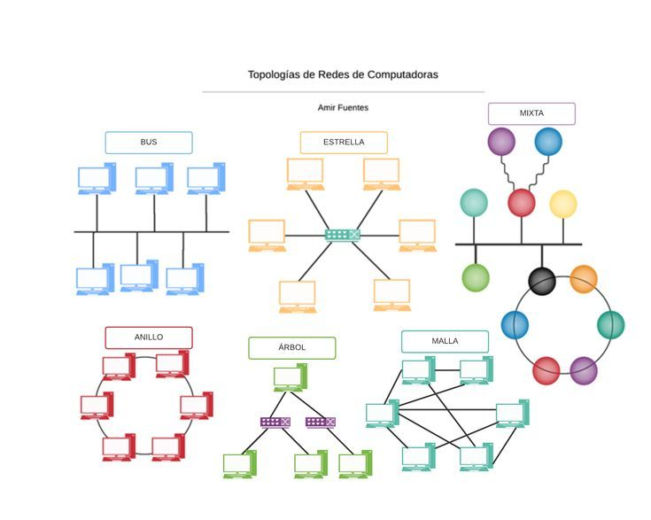
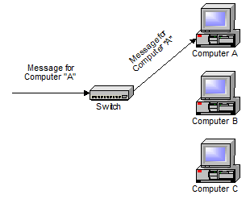

¿Qué es una Red de Computadoras?
Una red de computadoras es un conjunto de equipos informáticos conectados entre sí que comparten recursos, datos y aplicaciones.
Historia de las Redes
Las redes nacen en la década de 1960 con ARPANET, proyecto impulsado por el Departamento de Defensa de los Estados Unidos, considerado precursor de Internet.
Tipos de Redes
- LAN (Local Area Network): Red de área local.
- MAN (Metropolitan Area Network): Red de área metropolitana.
- WAN (Wide Area Network): Red de área extensa.
Topologías de Red

- Topología de Bus: Todos los dispositivos comparten un solo cable.
- Topología de Estrella: Todos los dispositivos están conectados a un nodo central (switch o hub).
- Topología de Anillo: Cada dispositivo tiene exactamente dos conexiones, formando un círculo.
- Topología de Malla: Todos los dispositivos están interconectados entre sí.
Dispositivos de Red
| Dispositivo | Función |
|---|
| Router | Conecta redes diferentes y dirige el tráfico de datos. |
| Switch | Conecta dispositivos dentro de una misma red LAN. |
| Hub | Distribuye señales pero no las administra. |
| Access Point | Permite conexiones inalámbricas. |
Protocolos de Comunicación
- TCP/IP: Base de Internet, define cómo los datos deben ser empaquetados, transmitidos y recibidos.
- HTTP/HTTPS: Protocolos para la transferencia de páginas web.
- FTP: Protocolo para transferencia de archivos.
- SMTP/POP3/IMAP: Protocolos de correo electrónico.
Ejemplo de configuración IP en Windows
1. Ir a Panel de control > Red e Internet > Centro de redes.
2. Hacer clic en "Cambiar configuración del adaptador".
3. Click derecho en la red activa > Propiedades.
4. Seleccionar "Protocolo de Internet versión 4 (TCP/IPv4)" > Propiedades.
5. Ingresar IP manualmente o configurar DHCP.
Ejemplo de Red Simple
Conexión de tres computadoras a un switch, que a su vez está conectado a un router.

Comandos de Redes
- ping: Verifica conectividad con otro host.
- ipconfig: Muestra la configuración IP actual.
- tracert: Rastrea la ruta a un destino.
- netstat: Muestra las conexiones activas.